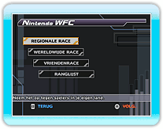
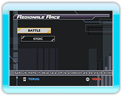
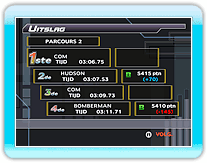
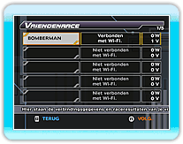
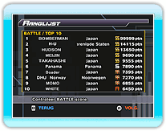

Kies "Nintendo WFC" in het hoofdmenu. Als de verbinding is gemaakt, wordt het Nintendo WFC modus keuzescherm getoond.
Kies de gewenste Nintendo WFC modus en druk op  .
● REGIONALE RACE
Neem het op tegen onbekende spelers in de regio Europa.
● WERELDWIJDE RACE
Speel tegen onbekende spelers uit de hele wereld.
● VRIENDENRACE
Speel tegen vrienden.
● SCORE
Je kunt de scores voor de modi BATTLE, STOIC en TIME ATTACK bekijken.
 |
|
 |
|
REGIONALE RACE of
WERELDWIJDE RACE kiezen |
|
 |
|
 |
Je kunt kiezen uit twee modi. Kies de modus waaraan je wilt deelnemen en druk op .

● BATTLE
De eerste speler die 3 ronden op het parcours voltooit, is de winnaar. Gebruik verschillende items om je tegenstanders dwars te zitten en je te verdedigen tegen aanvallen.
● STOIC
Gebruik techniek in een race om de eerste plaats en ontwijk obstakels. De eerste speler die 3 ronden voltooit, is de winnaar.
Als je boostmiddelen gebruikt, ga je sneller, maar je kunt dan geen items gebruiken.
Kies een personage en uitrusting en kies dan een parcours om de race te starten. Er wordt een willekeurig parcours gekozen uit de keuze van alle leden. Aan het einde van de race gaat je score omhoog of omlaag.
● VRIENDENRUIMTE
Een race tegen vrienden. Selecteer een spelmodus en een personage/uitrusting waarmee je wilt spelen. Zoek vervolgens spelers onder je vrienden waarmee je vriendencodes hebt uitgewisseld.

● Meedoen met een vriend
Meedoen aan de race van een vriend. Als je vriendenschema opent worden de verbinding en raceresulaten van elke vriend getoond.
 Nadat je meedoet met een vriend, verloopt een REGIONALE RACE en WERELDWIJDE RACE hetzelfde. Nadat je meedoet met een vriend, verloopt een REGIONALE RACE en WERELDWIJDE RACE hetzelfde.
Als het een race met vrienden was, worden de resultaten voor elke vriend bijgewerkt.
● Een vriend registreren
Registreer een vriend door zijn of haar vriendencode in te voeren. Geregistreerde content is ook zichtbaar.
Je score wordt bepaald door het sturen en ontvangen van scorepunten in de modi BATTLE en STOIC, of racetijden in de modus TIME ATTACK.
Als je het soort score kiest dat je wilt zien, zie je de top 10 voor de gekozen categorie. Je kunt ook zien hoe hoog jij en je vrienden staan. De scores worden automatisch bijgewerkt als je een scoretype selecteert.
*In sommige gevallen worden de scores niet bijgewerkt of duurt het even voor de informatie wordt weergegeven.
|